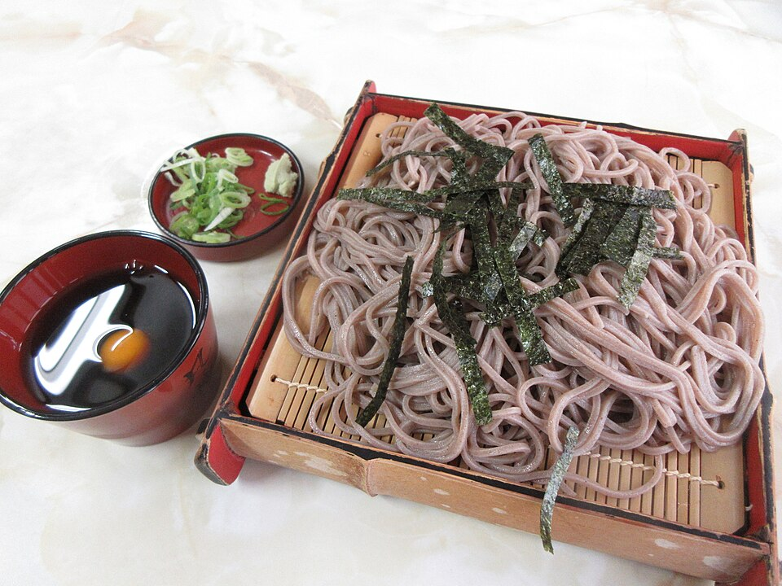

komorebi kitchen
木漏れ日 komorebiTHE JAPANESE KITCHEN
FROM OUR KITCHEN TO YOURSA little Japan,
A little Japan,
at your table.
Recipes, stories, and a taste of tradition.

A warm, Japanese food-inspired website with 15 recipes. Recreated in Canva for customization.